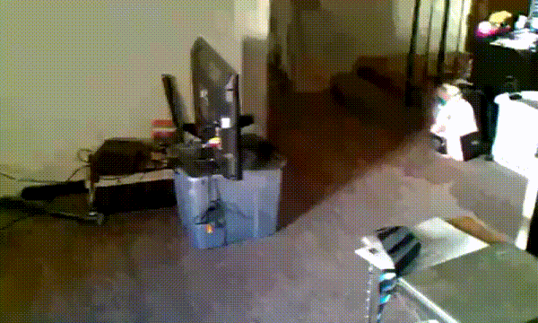

by @AV4TAr.
Brought you by @AV4TAr

"Se me cortó la conexión mientras hacía la migración" - No más :)
~ screen
~ screen -ls
~ screen -r [numero-sesion]
disponible en Linux / Mac / Cygwin
Ctrl-a
Ctrl-a c
Ctrl-a "
Ctrl-a d
quick reference http://bit.ly/screen-quick-reference
~ tmux
~ tmux list-sessions
~ tmux list-clients
~ tmux attach-session [-t numero-sesion]
Ctrl-b
Ctrl-b c
Ctrl-b "
Ctrl-b %
Ctrl-b flecha
Ctrl-b d
Ctrl-b ?
teamocli
crear sesiones automáticamente con tmux
Fork me on Github